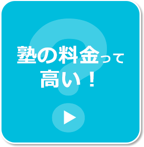
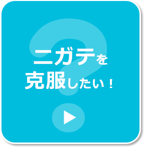
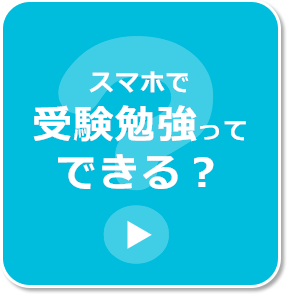
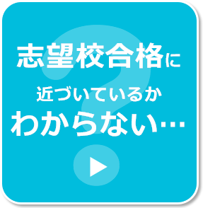
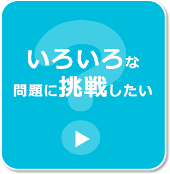

利用した先輩の７割以上が「何を勉強したらいいかわかるようになった」（※）と回答しているよ!
※2015年度高校３年生利用者アンケートより
ここがすごい！
「合格への戦略」のヒミツとは？
受験を意識した際に出てくる様々な声をもとに、「合格への戦略」のスゴイところを紹介！気になる所をタップしよう！
- 
- 
- 
- 
- 
受験勉強の進め方がわからないキミ！
「合格への戦略」は、志望校を登録すると、キミの「進研模試」の成績結果と志望校の入試データにもとづいて、目標から逆算した学習戦略を立案します！キミが今日取り組むべき問題を、毎日スマートフォンに自動配信してくれるから、受験勉強の進め方で迷うことはなくなるはず！
志望校に向けた
学習スケジュールをたてるのがニガテなキミ！
学習スケジュールをたてるのがニガテなキミ！
「合格への戦略」は、志望校を登録すると、キミの「進研模試」の成績結果と志望校の入試データにもとづいて、目標から逆算した学習戦略を立案します。志望校や学習したい教科・科目を変更した場合も、キミに代わって再度スケジュールを引き直してくれるぞ！学習スケジュールをたてるのがニガテなキミも、「合格への戦略」ならうまく受験対策を進められる！
利用した先輩の８割以上が「うまく学習を進められるようになった」（※）と回答しているよ！
※2015年度高校３年生利用者アンケートより
塾の料金は高いと思ったキミ！
「合格への戦略」の料金は、13,800円（税込）！一度購入すると、高３の３月中旬までずっと利用できるよ。センター試験対策、個別大試験対策の両方に活用でき、５教科にも対応！志望校や教科・科目・分野の設定は、いつでも変更できるので、キミにピッタリの活用が可能です。また、「合格への戦略」を１年間利用したとすると、月額換算1,150円！「合格への戦略」なら、キミ専用の受験対策が低価格で実現できます！
利用した先輩の声「『進研模試』の結果をもとに安く受験対策ができる」（※）
※2015年度高校３年生利用者アンケートより
利用した先輩の声「『進研模試』の結果をもとに安く受験対策ができる」（※）
※2015年度高校３年生利用者アンケートより
ニガテな問題をなくしたいキミ！
「合格への戦略」は、キミの「進研模試」の成績結果と志望校の入試データをもとに、ニガテな教科・科目・分野かつ学習優先順位の高い問題から配信されます。つまり、効率的にニガテ克服が可能です。さらに、一度解いた問題の中で、とくに正解率が低かった問題が自動的に蓄積されるので、自分のニガテな問題に絞った復習もできるぞ！「合格への戦略」で、効果的にニガテをつぶし、ライバルに差をつけよう！
利用した先輩の声「合格への戦略は、自分の苦手分野の対策ができるひみつ道具！」（※）
※2015年度高校３年生利用者アンケートより
利用した先輩の声「合格への戦略は、自分の苦手分野の対策ができるひみつ道具！」（※）
※2015年度高校３年生利用者アンケートより
スキマ時間にも勉強したいキミ！
「合格への戦略」は「選択式」の問題も豊富に用意。選択式の問題は、答えを選ぶと自動的に採点されるから、サクサク勉強が進められる！もちろん、ノートとペンを使って解く「記述式」の問題もあるから、自宅などで本格的な受験勉強もできるよ。「合格への戦略」なら、場所を問わずに色々な学習スタイルで活用できるよ！
利用した先輩の７割以上が「効率的に勉強できるようになった」（※）と回答しているよ！
※2015年度高校３年生利用者アンケートより
利用した先輩の７割以上が「効率的に勉強できるようになった」（※）と回答しているよ！
※2015年度高校３年生利用者アンケートより
スマホで受験勉強どうやるの？と思ったキミ！
「合格への戦略」は、スマートフォンがキミ専用の問題集になる学習コンテンツ。スマートフォンだからこその強みをいかして、本格的な受験勉強に加えスキマ時間にも利用ができ、さまざまなシーンで大活躍！センター試験対策だけでなく、ノートとペンを使った個別大試験対策もできるよ！もちろん５教科に対応しているし、英語のリスニング対策、解説動画や補足動画も充実しているので、スマホでも十分に受験対策が可能です！
利用した先輩の声「今やるべきことを学習できる、自分に合った“問題集”です」（※）
※2015年度高校３年生利用者アンケートより
利用した先輩の声「今やるべきことを学習できる、自分に合った“問題集”です」（※）
※2015年度高校３年生利用者アンケートより
受験対策の進捗を知りたいと思ったキミ！
「合格への戦略」なら、志望校に向けた学習の達成状況が一目瞭然！教科・科目の達成状況が、センター試験対策・個別大試験対策それぞれでわかるので、課題の教科・科目が一目で把握できるぞ！また毎日の取り組みペースも表示されるので、受験対策のペースメークも簡単。志望校に向けた最新の進捗がわかるから、志望校合格にどれだけ近づいているか実感できます！
利用した先輩の７割以上が「勉強に対してやる気が起きた」（※）と回答しているよ！
※2015年度高校３年生利用者アンケートより